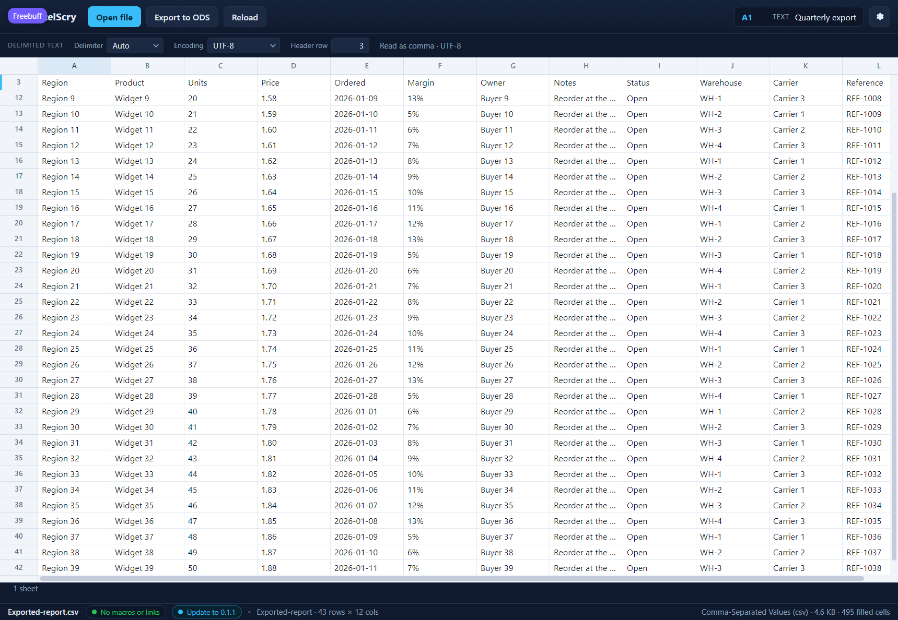

<!doctype html>
<meta charset="utf-8">
<title>ExcelScry — choosing which row is the header</title>
<style>
  body { margin: 0; background: #1b1d22; color: #c9cdd6;
         font: 14px/1.5 Segoe UI, system-ui, sans-serif; }
  figure { margin: 0; }
  img { display: block; width: 100%; height: auto; }
  figcaption { padding: 12px 16px; }
  code { color: #8fd3ff; }
</style>
<figure>
  
  <figcaption>
    <code>Exported-report.csv</code>, scrolled well past its first rows. Its
    column names are the third record — the two above are a title and a
    <em>generated</em> line — so <strong>Header row</strong> says
    <strong>3</strong>, and the strip at the top holds
    <strong>Region</strong>, <strong>Product</strong>, <strong>Units</strong>
    and the rest, with row number <strong>3</strong> beside them and row&nbsp;12
    starting underneath. Naming another row in the field moves the pin; so does
    clicking that row's number in the margin, which is how a header found by
    eye is chosen. Clearing the field, or clicking the chosen number again,
    leaves nothing pinned. (Shown in the UI harness, which serves this front end
    against mocked rows.)
  </figcaption>
</figure>
